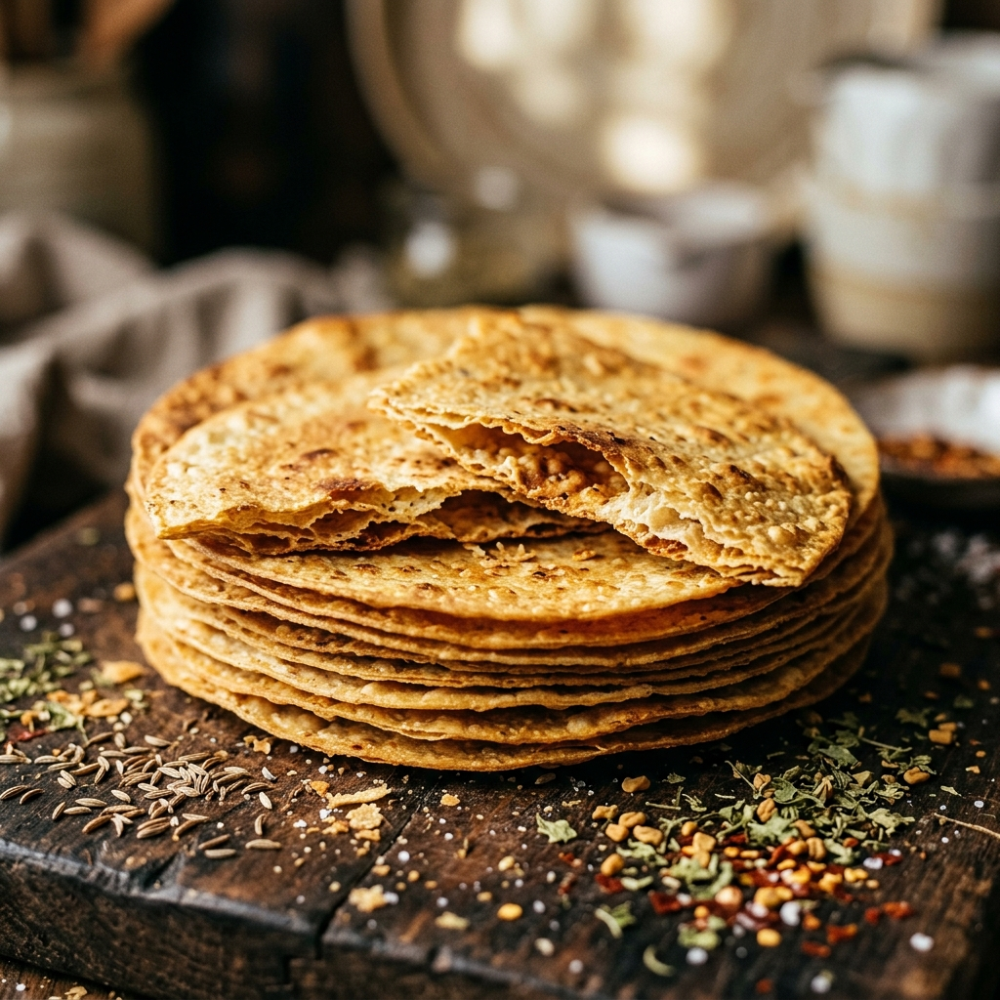
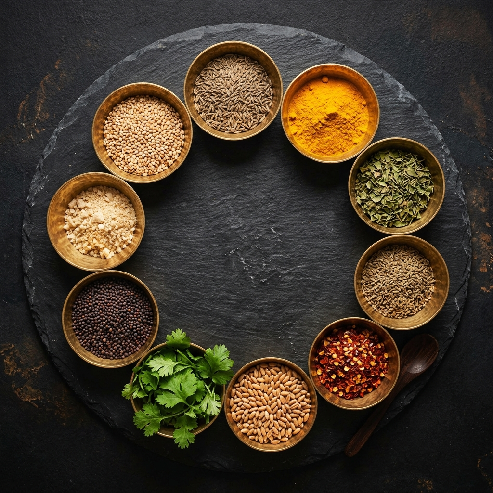
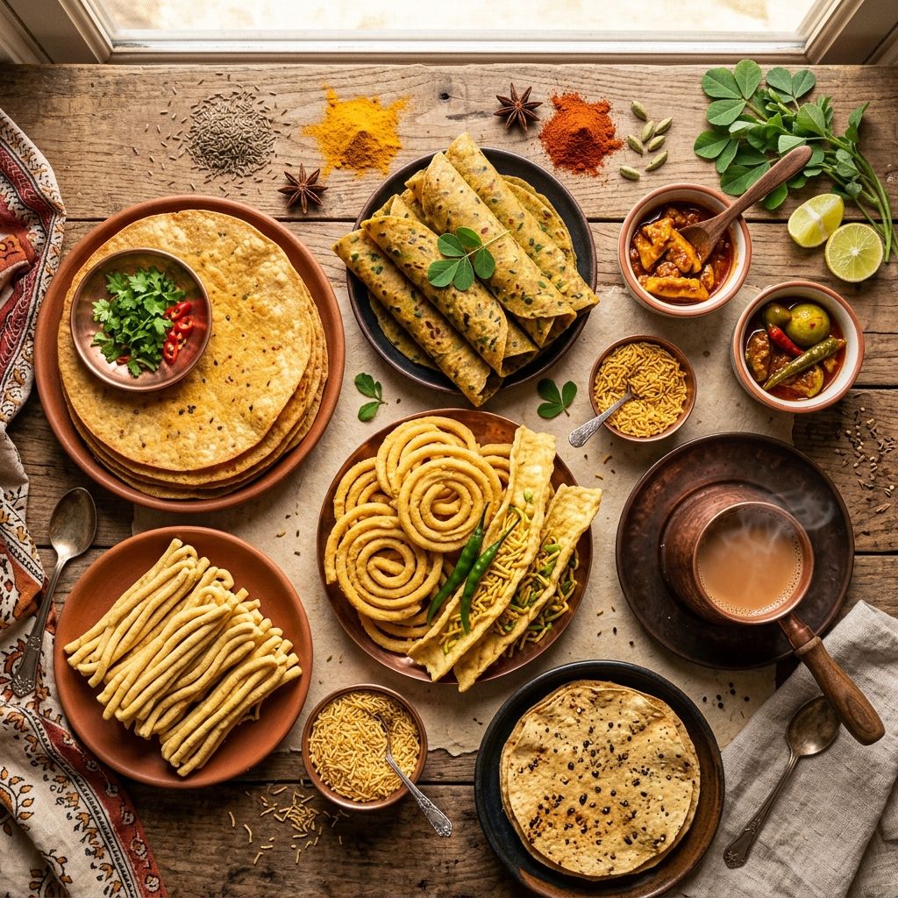
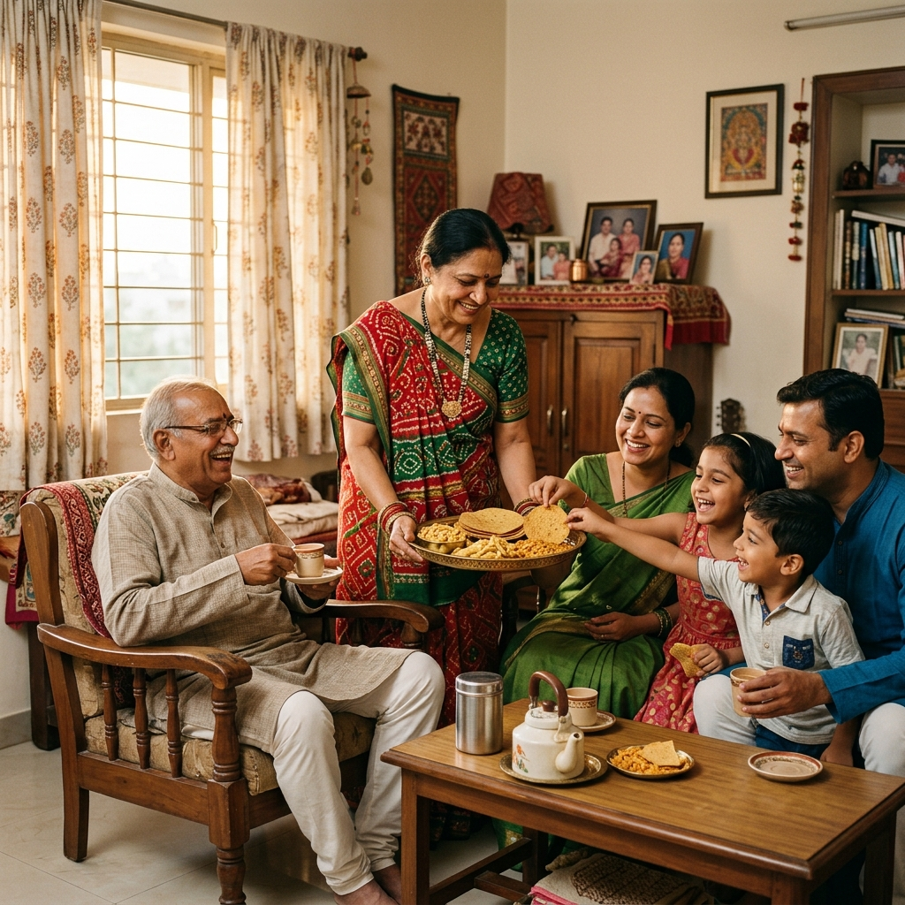
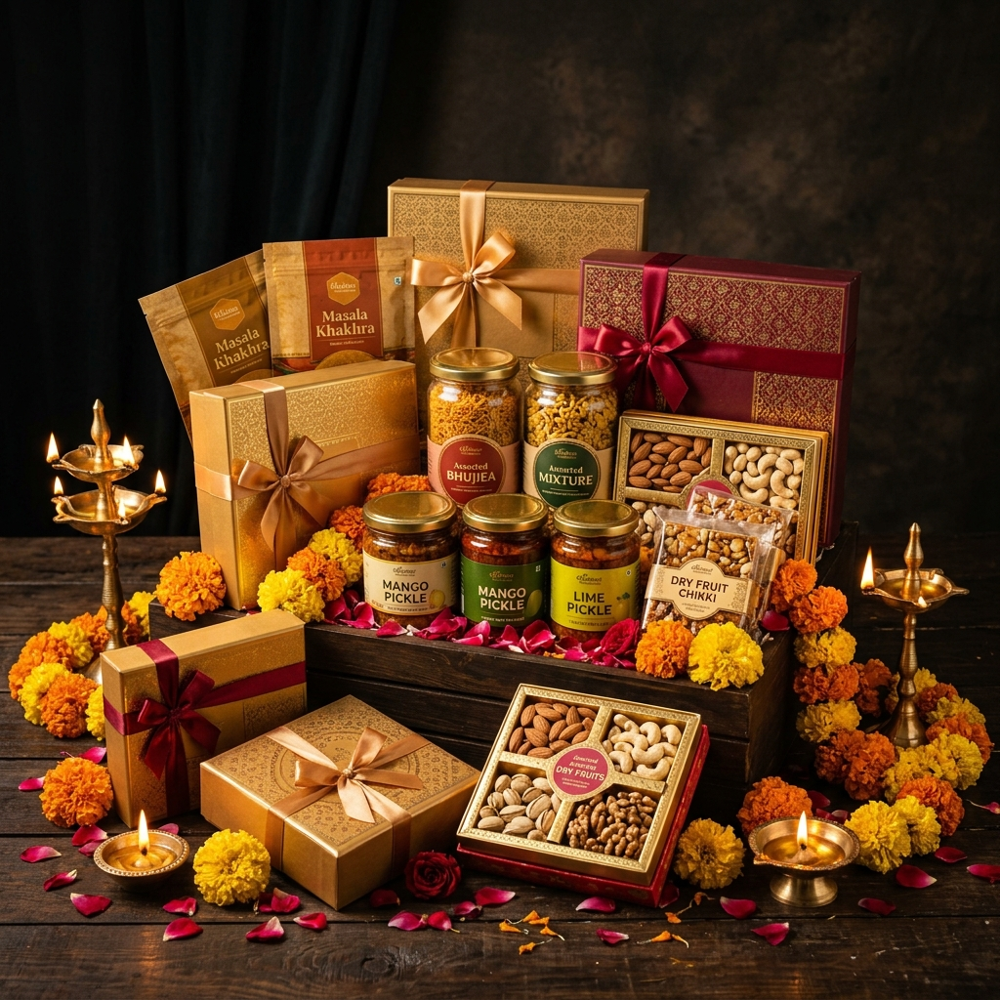
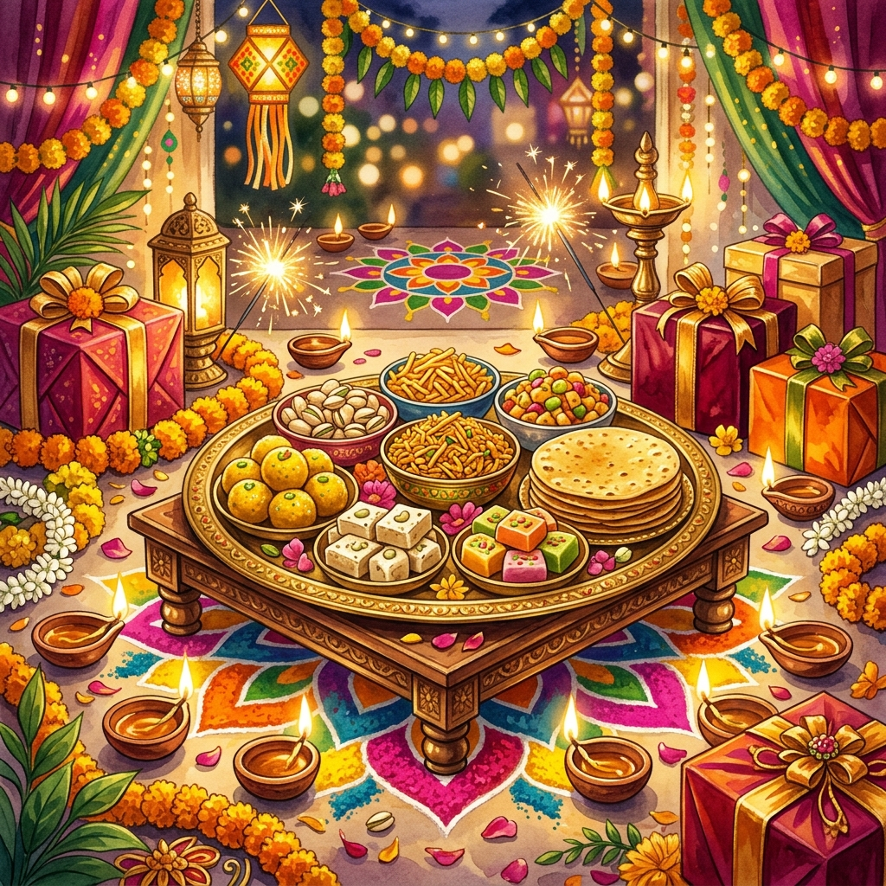
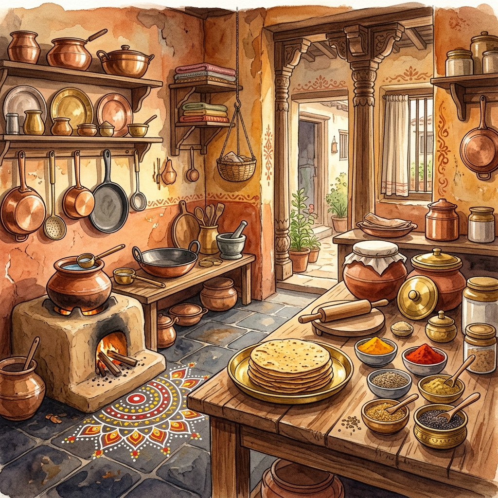

A Family Built on Crunch
Discover our family album and the steps that shaped Sonalben Khakhrawala

A Small Home Kitchen
Sonalben started in her cozy home kitchen, rolling thin whole wheat discs on a simple wooden board. Roasting them over a slow flame, she served neighbors who immediately loved the clean, crispy texture.

First Handmade Batches
As orders grew, the family came together to stone-grind local spices like cumin and fenugreek. Pressing and roasting each batch by hand on heavy iron griddles to maintain the homemade goodness.

Early Local Customers
Neighborhood tea stalls and local stores began ordering daily stacks. The family packed the fresh snacks in simple craft bags, delivering them on bicycles. Trust grew, one daily bite at a time.

Growing Trust in Ahmedabad
We raised our first commercial retail awning in Ahmedabad. The city embraced Sonalben's fresh, hand-roasted khakhras as the ultimate companion to hot afternoon ginger tea.

Opening Dedicated Stores
We expanded to dedicated branches across different sectors of the city. We added fresh, crispy Fafda, melt-in-mouth Gathiya, and spicy Sev, staying true to our core family kitchen standards.

Serving Generations of Families
Sonalben's snacks became a staple of daily life, marriage hampers, and school recesses. Children who once ate our bicycle snacks now bring their own kids to our storefronts.

Modern Sonalben Today
While Sonalben now exports domestic and international packages, our core process remains unchanged. Every khakhra is still hand-pressed, roasted, and packed with the same family warmth we started with in 1990.